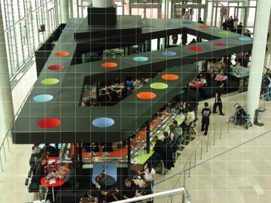
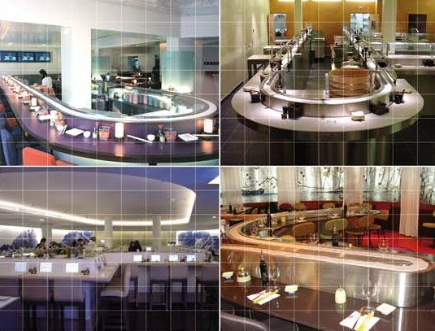
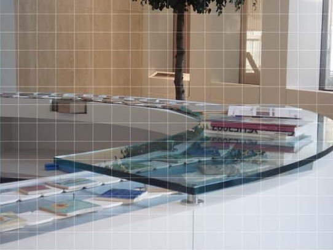
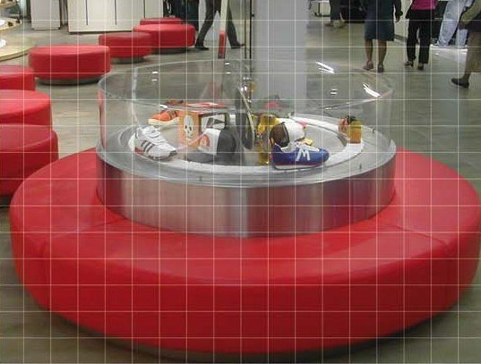
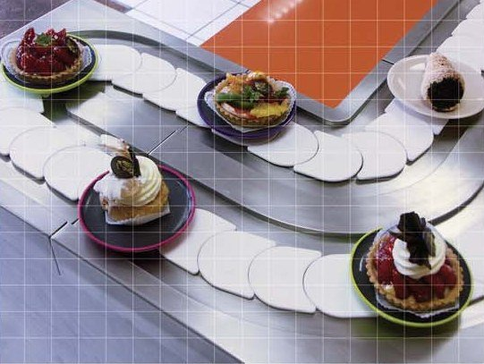
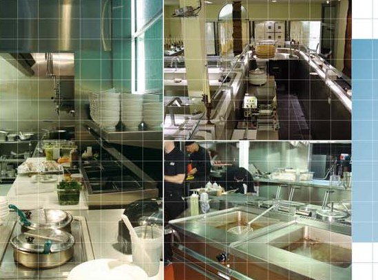
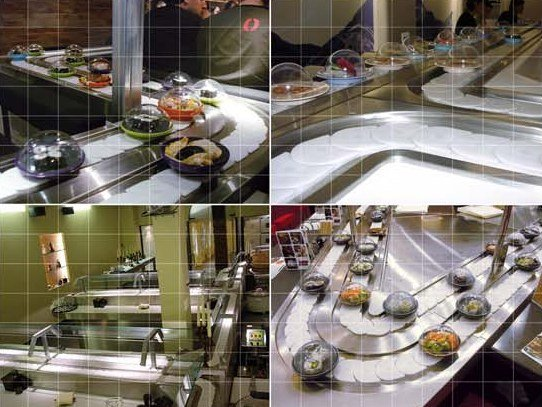
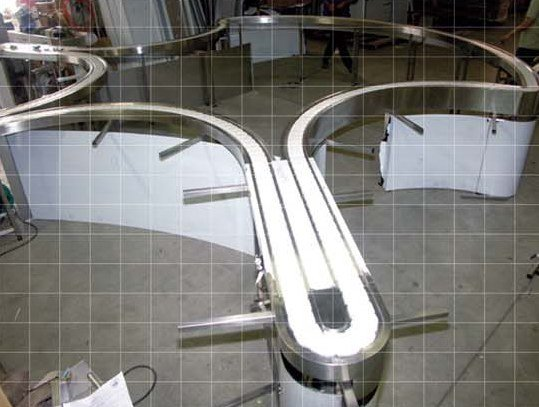

Le sushi de A à Z. Nous créons l’excellence.
Convoyeurs à sushi à palettes ou magnétiques, cuisson, accessoires, agencement : Sopacom Concept conçoit, fabrique et installe l’ensemble du concept, depuis son usine de Stains.

Visuels extraits de la plaquette Sushi Concept (impression) : photographies haute définition à fournir.
« Le concept du convoyeur à sushi »
Les intérêts d’un convoyeur à sushi
Les années 2000 ont fait apparaître de nouvelles tendances culinaires dans des ambiances modernes et épurées, où la cuisine a été transportée au milieu de la salle. Le concept du convoyeur à sushi en est une parfaite interprétation. Il répond également aux attentes de la clientèle citadine : « Pouvoir faire un vrai repas équilibré, en un quart d’heure, pour 10 €, éventuellement seul. »
Pour les investisseurs, ce concept permet, sur une petite surface et avec une équipe restreinte, quel que soit le type de local, d’affirmer sa personnalité en se démarquant des autres.
Pour une soirée, un événement ou l’animation d’un stand, Sopacom Concept dispose en location d’un convoyeur à sushi compact mobile.
Source : Plaquette « Le SUSHI de A à Z » (PDF Sopacom Concept) · Site sushiconcept.fr.
« Inspiration sushi Bar »
Convoyeur à palettes
Toujours à la pointe des tendances, Sopacom Concept surfe sur l’engouement pour les sushis. En détournant son expérience du secteur de la manutention mécanisée, dont il se dit leader, Sopacom a interprété sa propre vision du KAITEN, le « convoyeur à sushi », pour un résultat entre tradition et modernité.
Ce savoir-faire a immédiatement convaincu les premiers investisseurs de ce segment ; la notoriété de Sopacom Concept est devenue internationale. Parmi les réalisations, le plus grand convoyeur mesure 87 mètres linéaires.
Sa maîtrise de la technique permet de proposer aujourd’hui des solutions avec fourniture et pose, simples ou complexes, très économiques.
Source : Plaquette « Le SUSHI de A à Z » (PDF Sopacom Concept) · Site sushiconcept.fr.


« Le spectacle est sur la table »
Convoyeur magnétique
Pour beaucoup, le système à palettes est associé à l’image du convoyeur à sushi. Pour séduire une clientèle avide de nouveauté et répondre à la demande de concepts en quête d’une image forte, Sopacom Concept propose sa piste magnétique.
Extrêmement hygiénique et d’aspect résolument moderne (le choix des matériaux de la piste de glissement souligne aussi la rupture), ce convoyeur a déjà convaincu de nouvelles chaînes de restauration, tout comme des designers à la recherche d’un présentoir extravagant.
Source : Site sushiconcept.fr.
Aucun risque pour les porteurs de pacemaker
La technique s’intègre sous l’assiette et la piste de glissement ; les assiettes ne sont pas aimantées.
Assiettes garanties dans le temps
Pas de perte du champ magnétique dans le temps, selon Sopacom Concept.
Composants en inox
Tous les composants mécaniques sont en inox : pas de risque de serrage des pignons.
« Des fins totalement opposées »
Multiples applications
Dès sa première réalisation, Sopacom Concept a reçu de nombreuses demandes pour détourner la technique du convoyeur à palettes et magnétique à des fins totalement opposées. Il a ainsi élaboré des convoyeurs présentoirs : à chaussures, à carrelage, à objets publicitaires, à gâteaux.
Dernière réalisation citée sur le site : le décor de l’émission « L’objet du scandale » (France Télévisions), où des objets, sujets de l’émission, circulent sur un convoyeur à palettes.
Source : Plaquette « Le SUSHI de A à Z » (PDF Sopacom Concept) · Site sushiconcept.fr.



« Entre tradition et modernité »
Machines à sushi
La réalisation de sashimi, de sushi et de maki, simple et sobre d’apparence, nécessite un vrai savoir-faire qui va de la découpe des poissons à la cuisson et au façonnage des boulettes et des rouleaux de riz. Pour améliorer la productivité, Sopacom Concept propose des techniques à la fois créatives et pratiques, pour faire de la préparation un respect des traditions.
La gamme se compose des meilleurs couteaux venus du Japon, de cuiseurs à riz et d’appareils automatiques et semi-manuels de préparation, pour une exécution parfaite et classique.
Source : Site sushiconcept.fr.
« Tout un programme autour de votre convoyeur »
Cuisson
La majorité des sushi bars proposent une carte de produits chauds : soupes, grillades, tempuras. Sopacom Concept a élaboré une ligne de cuisson aux caractéristiques techniques de pointe, performante et fonctionnelle : soupière encastrable dans le plan de travail, grill vitrocéramique vertical et horizontal, plancha bimétal, friteuse à haut rendement, wok à induction.
Pour une intégration parfaite autour du convoyeur et une optimisation des espaces, il a également créé une structure fixe ou mobile, avec soubassement neutre ou réfrigéré, pour recevoir la ligne de cuisson.
Source : Site sushiconcept.fr.
« Environnement sans concession »
Accessoires
Dans un créneau comme le convoyeur à sushi, il est parfois difficile de trouver, en termes d’agencement, de vaisselle et d’ustensiles, le bon produit. Sopacom Concept a donc développé ses propres lignes : table froide de préparation avec dessus marbre et support de bacs gastro réfrigéré, plonge de préparation avec plan de découpe et égouttoir (option : soubassement réfrigéré), chariot à assiettes.
En collaboration avec des artisans, le complément de gamme indispensable : assiettes, couteaux, laveuses, casiers à assiettes.
Source : Plaquette « Le SUSHI de A à Z » (PDF Sopacom Concept) · Site sushiconcept.fr.
« Sur mesure pour des lieux d’exception »
Agencement
Le client peut suivre en permanence, avec son équipe, l’évolution de la fabrication de son convoyeur et optimiser ainsi tous les coins et recoins en intégrant les tables, plonges et étagères que Sopacom Concept fabrique au fur et à mesure de l’avancement, bien avant l’installation définitive, pour faire gagner un temps précieux à la veille de l’ouverture.
Source : Plaquette « Le SUSHI de A à Z » (PDF Sopacom Concept) · Site sushiconcept.fr.

« Un partenaire de choix »
Conception
Les chances de succès sont bien plus grandes quand on partage l’expérience et le savoir-faire de spécialistes. Pour les investisseurs convaincus par ce concept séduisant, le bureau d’étude de Sopacom Concept réalise les plans d’implantation et de réservations. En partenariat avec des experts de choix, il peut élaborer avec le client un projet clé en main.
Source : Plaquette « Le SUSHI de A à Z » (PDF Sopacom Concept) · Site sushiconcept.fr.

« Un concentré de savoir-faire »
Fabrication
L’expérience et le savoir-faire des collaborateurs permettent de répondre à toutes les attentes, où forme et fonction sont indissociables. Les exigences des clients, associées à la qualité des fabrications, donnent naissance à des lieux où tout est possible pour le plaisir des yeux, en salle comme en cuisine.
Tous les convoyeurs sont fabriqués, assemblés et testés dans l’usine de Stains (93) dans un délai très court, avant d’être installés par les équipes de Sopacom. La fiabilité, la qualité et la disponibilité des pièces mécaniques sont primordiales : « La rentabilité de votre sushi bar repose sur son bon fonctionnement ».
Source : Plaquette « Le SUSHI de A à Z » (PDF Sopacom Concept) · Site sushiconcept.fr.

Un résultat surprenant pour des lieux d’exception.
Lorsqu’un concept innovant arrive à maturité, les designers investissent rapidement le créneau et proposent leur vision moderne, luxueuse, voire délirante. Sous l’impulsion de quelques investisseurs (Yo, Matsuri, Lo Sushi, groupe Bertrand, Planète Sushi…) et le crayon de designers réputés, sont nés de beaux projets, selon Sopacom Concept. Le site mentionne une quarantaine de références.
- Lo Sushi 1 et 2
- Club Med World
- Yo : Sénart, Créteil, La Défense
- No Sushi (Genève)
- Matsuri (Lyon)
- Kaiten
- Voile de Chine (Paris)
- Baramaki « Le Printemps »
- Wok Sushi : Vélizy, Brétigny-sur-Orge
- Planète Sushi : Bastille, Nice, Meaux, Strasbourg, Marseille, Salon de la franchise 1 et 2, concept mobile
- Marazzy (Lyon)
- Galeries Lafayette « espace mode »
- SIG : Suresnes, Montparnasse
- Bon 1 (Paris)
- Ikon Sushi (Chalon-sur-Saône)
- Aventis « siège »
- Magnétique Sushi (Bordeaux)
- Shogun (Levallois)
- Seleste Sushi (Genève)
- Baratapas (Avignon)
- Génération Sushi (Maroc)
- France Télévisions (émission)
- Tai Shogun 2 (Rennes) · magnétique
- Wasushi (Nantes) · magnétique
- Mikado (Metz)
- Cavalcade Sushi (Toulon) · magnétique
- Sushi Lounge (centre commercial Italie 2)
- Maki Sushi (Orléans)
- Sushi Villa (Mantes-la-Ville)
- Marzen (Rabat, Maroc) · magnétique
- Sushi Me (Grenoble 1 et 2)
- Sushi Mura (Rouen) · magnétique
- Fusion Paradise (Boulogne, 92)
- RIE Le Carré (92) · convoyeur magnétique de présentation
Liste reprise du site Sushi Concept (orthographe harmonisée). En préparation, selon la même source (mention non datée) : Cagne S/Mer, Nantes, Toulouse, Strasbourg.

La plaquette Sushi indique l’adresse e-mail sushi@sopacomconcept.fr et le site http://www.sopacomconcept.fr : à confirmer avant publication (le formulaire de contact du site utilise l’adresse de Sopacom Industrie).